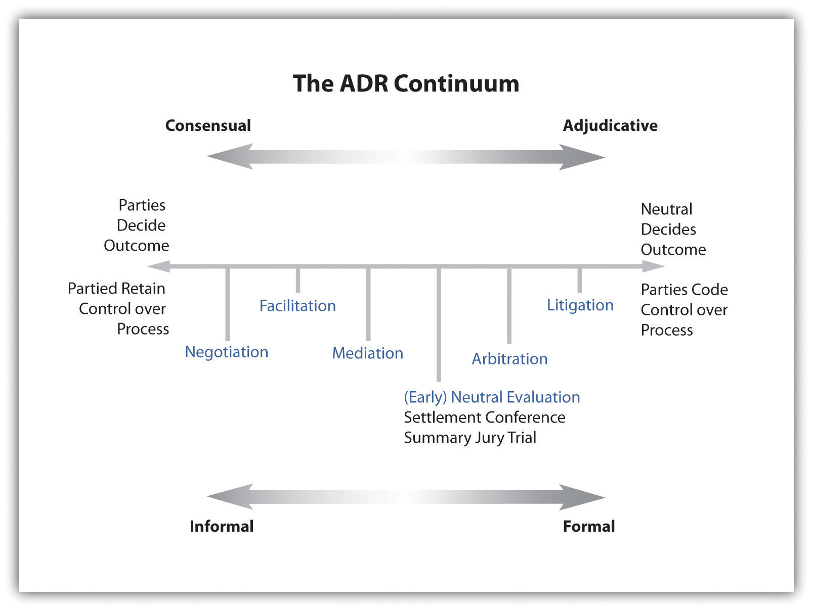

After reading this chapter, you should understand alternative dispute resolution (ADR) options, including the benefits and drawbacks to different methods of dispute resolution. You will know the legal basis for mandatory arbitration, as well as why parties enter into voluntary ADR methods. You will understand current debates regarding the fairness of ADR. Additionally, you should be able to answer the following questions:
Imagine that you’ve been wronged by a supplier, by your employer, or by a business where you are a customer. You’ve correctly determined that you have an actionable legal claim. What are you going to do? You probably won’t run to the courthouse to file a formal complaint to initiate litigation. This is because litigation is very expensive and time consuming. Besides, you may wish to continue doing business with the supplier, employer, or business. Perhaps the matter is of a private nature, and you do not want to engage in a public process to determine the outcome. You would like the dispute to be resolved, but you do not want to engage in public, time-consuming, expensive litigation to do it.
A common method of dispute resolution that avoids many of the challenges associated with litigation is alternative dispute resolution. Alternative dispute resolution (ADR)Encompasses many different methods of dispute resolution other than litigation or trial. is a term that encompasses many different methods of dispute resolution other than litigation. ADR involves resolving disputes outside of the judicial process, though the judiciary can require parties to participate in specific types of ADR, such as arbitration, for some types of conflicts. Moreover, some ADR methods vest power to resolve the dispute in a neutral party, while other strategies vest that power in the parties themselves. See Figure 4.1 "A Continuum of Different ADR Methods" for a continuum of different ADR methods based on where power to solve the dispute is vested.
Figure 4.1 A Continuum of Different ADR Methods
Source: Adapted from New York State Unified Court System, http://www.nycourts.gov/ip/adr/images/continuum2.jpg.
Common methods of ADR include negotiation, mediation, and arbitration. Lesser used methods of ADR include minitrials, hybrid forms of mediation-arbitration (with elements of both), and collaborative goal-oriented processes. ADR is often used to resolve disputes among businesses, employers and employees, and businesses and consumers. ADR can also be used in many other types of conflicts. For instance, ADR strategies can be used in domestic law cases, such as divorce, or in international legal issues, such as issues relating to transboundary pollution. This chapter limits its focus to the use of ADR methods in business. Particularly, we will examine the common methods of ADR, including the benefits and drawbacks to each. We will also examine potential consequences to parties that have unequal bargaining power. Additionally, we will examine the use of ADR methods in situations where ADR may not be the most appropriate method of dispute resolution, such as civil rights violations.
ADR methods are used outside of the courtroom, but that does not mean that they are outside of the interests of our legal system. Participation in ADR has important legal consequences. For instance, parties that have agreed by contract to be subject to binding arbitration give up their constitutional right to bring their complaint to court. The Federal Arbitration Act (FAA)A federal statute that requires parties that have entered into contracts with mandatory arbitration clauses to submit to arbitration to resolve disputes arising under such contracts if the contract involves commerce. The U.S. Supreme Court interpreted the Federal Arbitration Act as Congress’s declaration of a national policy in favor of arbitration. is a federal statute under which parties are required to participate in arbitration when they have agreed by contract to do so, even in state court matters. Indeed, the FAA is a national policy favoring arbitration.Southland Corp. v. Keating, 465 U.S. 1 (1984). The Southland Corp. Court said that “in enacting…[the FAA], Congress declared a national policy favoring arbitration and withdrew the power of the states to require a judicial forum for the resolution of claims which the contracting parties agreed to resolve by arbitration.” This is an example of federal preemptionA judicially developed doctrine that recognizes the federal government’s power, derived from the Supremacy Clause of the U.S. Constitution, to control a particular area of law, either expressly or impliedly, and to take priority over state law or state attempts to regulate in a particular area. exercised through the Supremacy ClauseA clause in Article VI of the U.S. Constitution that declares federal law supreme, which means that in the event that federal and state law conflict, federal law trumps state law. in the U.S. Constitution.
There is a very good chance that you will—or already have—signed a contract that contains a mandatory arbitration clause. This means that if a dispute arises under that contract, then you will be required to arbitrate your claim rather than going straight to court. Under a binding arbitration clause, you will have waived your constitutional rights to go to court. Even if you have never signed such a contract and never will, there is still a good likelihood that you will be involved in a commercial dispute at some point in your life. Because of this, it’s important to understand the ADR process, situations in which litigation is a better choice than ADR, and special issues that arise when parties have unequal bargaining power.
Alternative dispute resolution (ADR) is a body of dispute-resolution methods outside of the litigation process. ADR is often faster, less expensive, and more private than litigation. For this reason, ADR can be the preferred dispute-resolution method, particularly when an ongoing relationship between disputants is desired. However, some types of disputes might be best resolved through litigation, such as in cases where parties have unequal power or resources or in civil rights violations. Common methods of dispute resolution are negotiation, mediation, and arbitration. Mandatory arbitration clauses are common in contracts, and such clauses are enforceable against the parties even if they wish to litigate their claims.